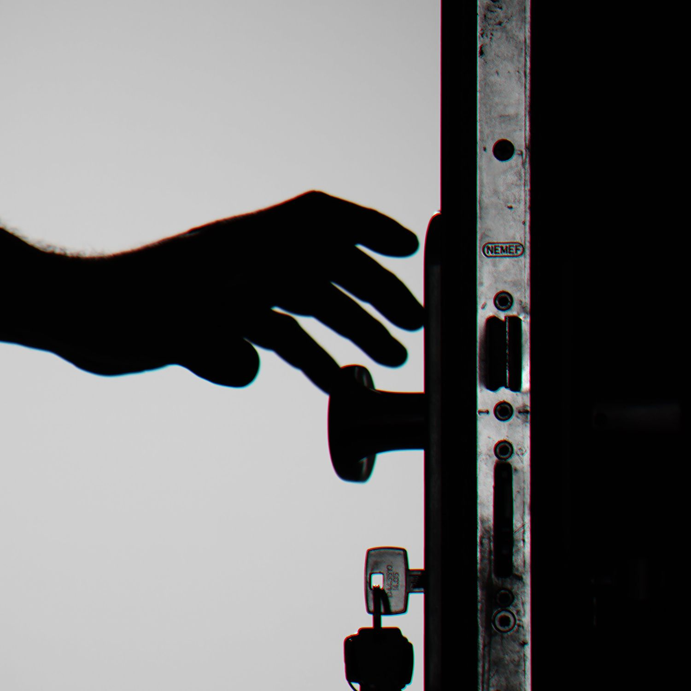
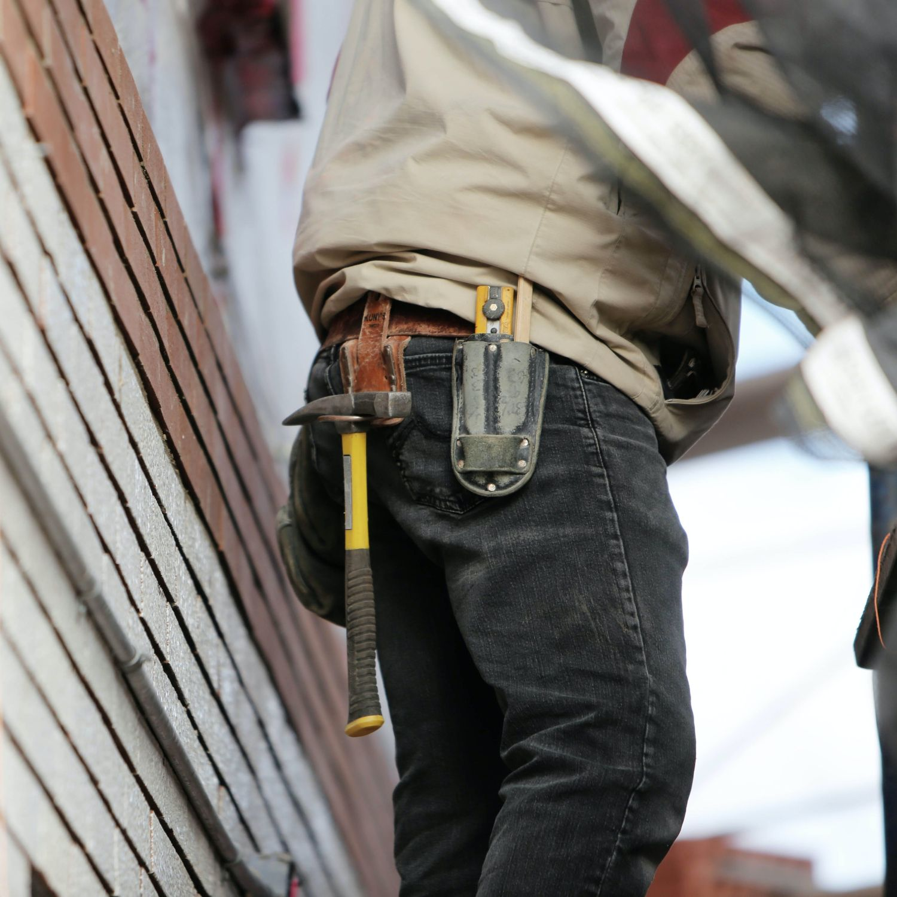

Dlaczego warto nas wybrać?
Posiadamy szerokie doświadczenie w pracy z klientami indywidualnymi, oraz przedsiębiorstwami.
Wierzymy, że w naszej pracy odpowiednie podejście, bez względu na wielkość realizacji, jest równie ważne, jak efekt końcowy.
Właśnie dlatego gwarantujemy, że będziecie Państwo zadowoleni z naszych usług.

Setki wstawionych drzwi i okien

Dziesiątki zadowolonych klientów
Fachowe doradztwo przed, w trakcie i po realizacji
